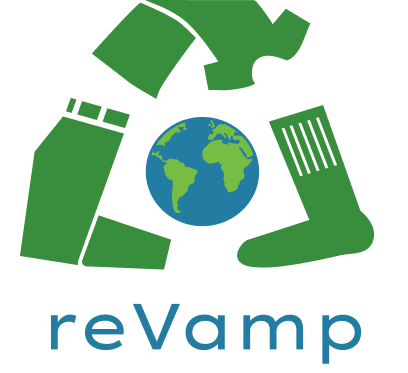

styleguide
Our web app idea is to create an app based on clothing
sustainability, where you are provided with many options
on how to repurpose your item. The options would be based
on the information you provide, such as if you have a knit
sweater you want to repurpose, you could make mittens out of them.
You can also choose to donate your clothes, you would be
given a few donation center locations to drop off your clothes.